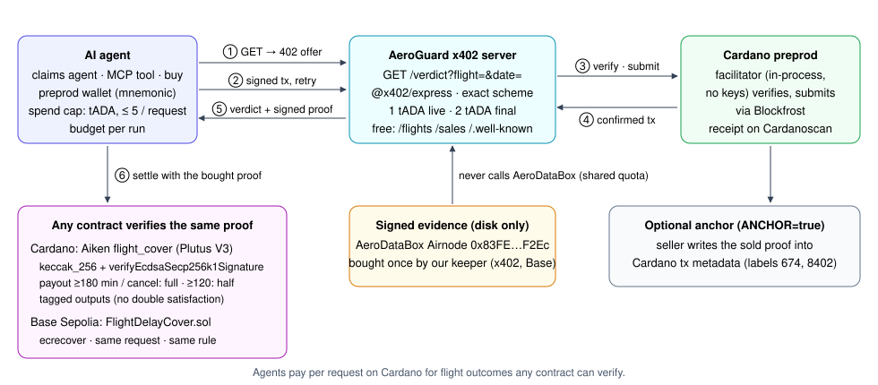

An Airnode-signed flight verdict, paid in tADA over x402, verified on Cardano by an Aiken contract and on Base by FlightDelayCover.
Flight APIs want accounts, API keys, monthly plans. An autonomous agent can't sign up — and one check shouldn't cost a subscription.
The answer is just JSON. Whoever relays it can change it, so no contract can pay out on it. Every insurer rebuilds the same trusted oracle.

for the final IB1314 verdict · 30 Oct 2026, 23:16 UTC
tx e2ef922be71ba61da9431f1a5f56f4c56f5d61348c4945194cf390dd0acd7864
Scan: the transaction
on Cardanoscan
verdict — status, delay, final
evidence — the AeroDataBox Airnode's signature over exactly this data
paidWith — the Cardano tx that bought it
No account, no API key. Unknown flights get a free 404.
keccak_256 + verifyEcdsaSecp256k1Signature on the bytes the Airnode signed
Pays like FlightDelayCover: ≥ 180 min or cancelled → full, ≥ 120 → half
Forgeries, stale answers and double satisfaction fail
44 / 44 tests
| Policy | Signed landing | Base · FlightDelayCover | Cardano · Aiken cover |
|---|---|---|---|
| #1 IB1314 MUC→MAD | 21:00Z · 25 min early | ClosedNoPayout | no payout · refunds insurer |
| #2 LH1816 MUC→BCN | 22:06Z · 11 min late | ClosedNoPayout | no payout · refunds insurer |
| #3 EI357 MUC→DUB | 21:26Z · 29 min early | ClosedNoPayout | no payout · refunds insurer |
| #4 BA955 MUC→LHR | 21:47Z · 3 min early | ClosedNoPayout | no payout · refunds insurer |
Threshold is 120 min — nobody was late enough. Both contracts agree, from the same signature.
Agent pays the premium in tADA over x402 — priced from the contract's quote
Server buys a FlightDelayCover policy on Base Sepolia with a fresh signed proof
cardanoJobRef =
keccak256(
"cardano:<tx>")
No settled payment, no policy · failures recorded as refund due · tested offline (8 tests)
EU261 claim agents · travel insurers · corporate travel tools · agent marketplaces (Masumi)
No account, ~1 ADA per verdict. A final answer never changes: buy the signed lookup once, every later sale is margin.
Mainnet in ADA / USDM · hosted facilitator · list as a Masumi agent · deploy the Aiken cover with an insurer pool
github.com/
womp-maindev/
aeroguard
→ cardano/